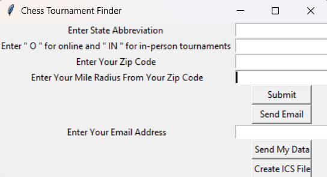

Click Here to Learn More!
For this project, I built a web crawler to find chess tournaments online and compile them into a CSV file for easy viewing. I also built a basic desktop GUI for convenient viewing and also for the user to customize their search parameters such as location, zip code, distance, and more. Later, I added features which allowed the user to email the file to an inputted email address and automate the process every month.
- Technologies Used: Python, BeautifulSoup, requests, Tkinter, Pandas, email, SMTP, MIME
- GitHub Repository: Chess Tournament Finder
